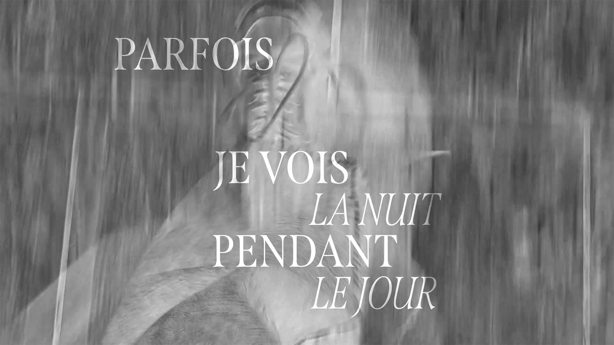
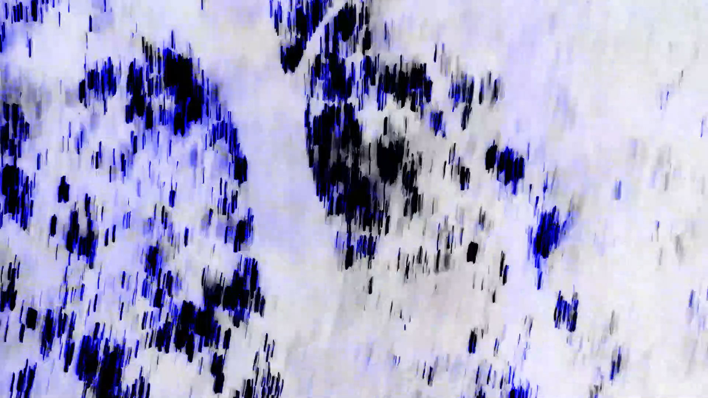

PARFOIS JE VOIS LA NUIT PENDANT LE JOUR
(2023)
vidéo expérimentalephotographie
Cette vidéo expérimentale dévoile la ville de Bruxelles sous un nouveau regard. La collecte photographique et vidéos de mes explorations urbaines - étendue sur plusieurs mois - met en avant l’architecture de cette ville en la mettant en tension avec la présence de la nature, dans les parcs notamment. Musique : Koreless - Moonlight


